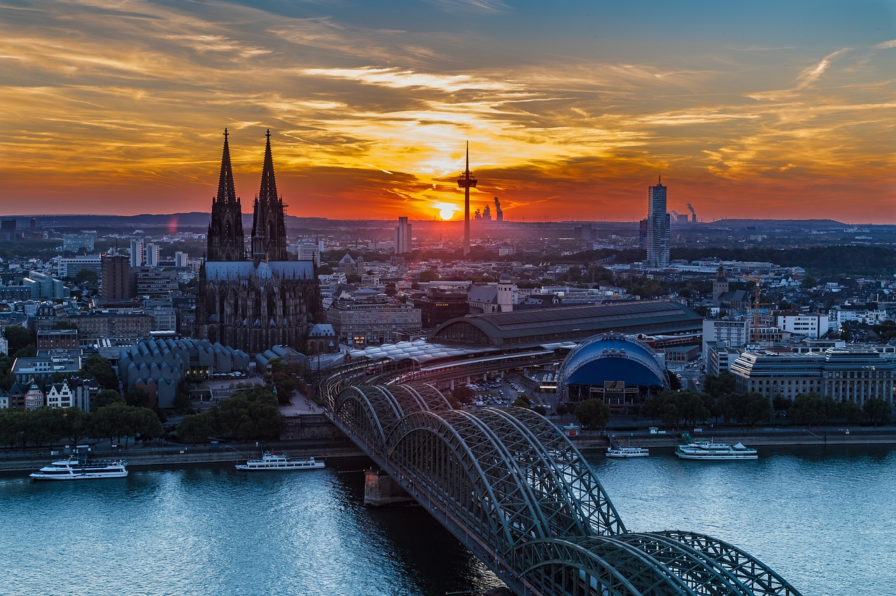
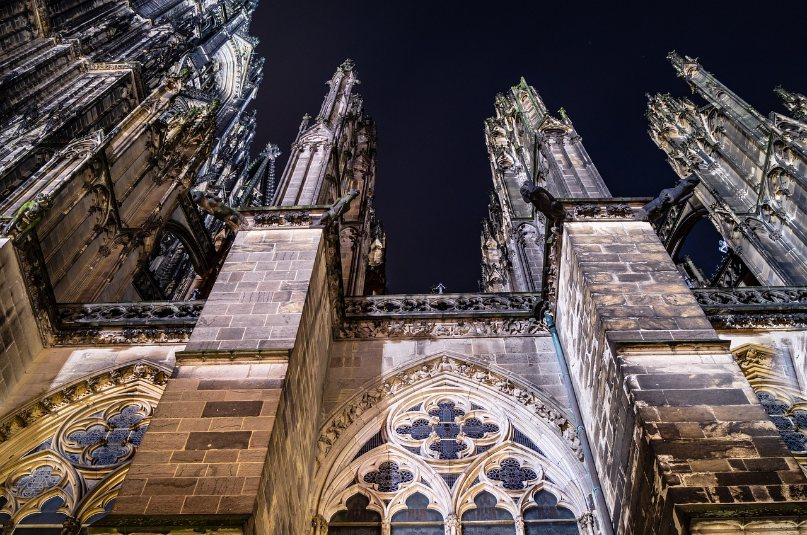
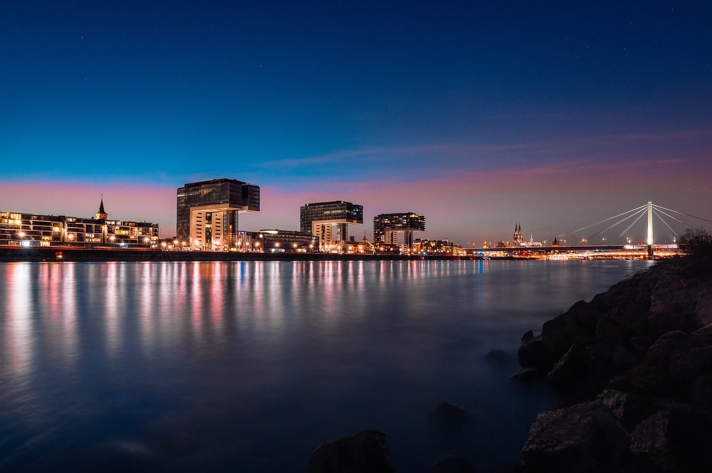
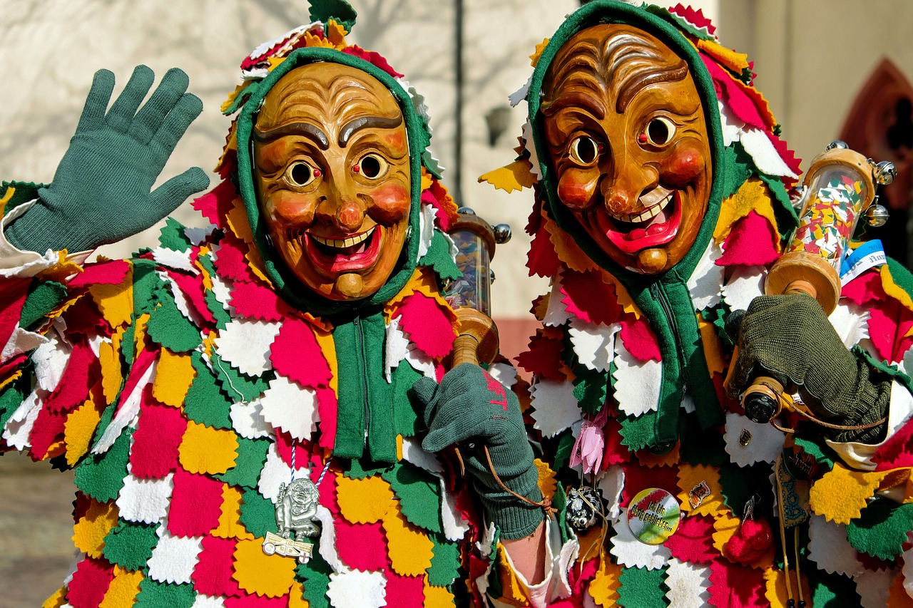

Highlights in cologne
Cologne offers a perfect mix of history, culture, and lively traditions. A visit to the stunning Cologne Cathedral, a Gothic masterpiece and UNESCO site, is a must, especially for its breathtaking interior and panoramic city views from the top. The nearby Rhine River is ideal for a scenic cruise or a relaxing riverside walk, where you can admire the city's architecture and the iconic Hohenzollern Bridge.



Explore the Carnival and Kölsch Culture!
Cologne's vibrant beer culture revolves around Kölsch, enjoyed in traditional brewery pubs, and if you're there during Carnival season, you'll experience the city's most energetic celebration, with colorful parades, costumes, and street parties
